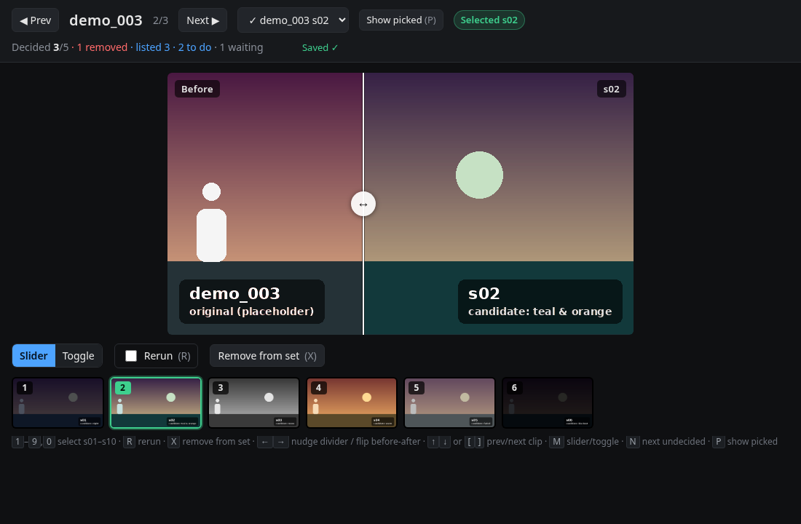
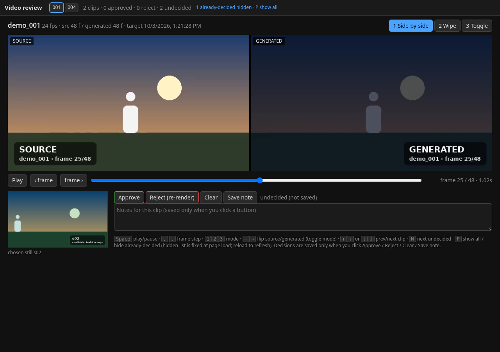

LoRA dataset review — live demo
Two tiny local web apps for human-in-the-loop LoRA / IC-LoRA dataset building with ComfyUI-style pipelines: pick the best generated still per clip, then approve or reject the rendered video pairs. This demo runs entirely in your browser with placeholder data; decisions are kept in localStorage and can be exported as the same JSON files the real apps write.

1 · Stills review
Before/after slider of the original frame vs each candidate still. 1–9 pick, R rerun, X remove from set, ↑↓ next clip.
Open stills demo
2 · Video review
Source vs generated clip in lock-step: side-by-side, wipe or toggle, frame stepping. Approve / Reject with notes. Space play, ,. step, 123 mode.
Open video demo